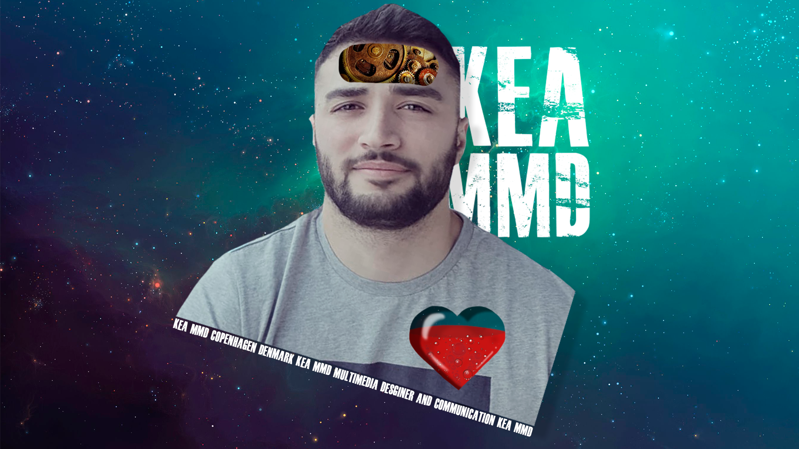
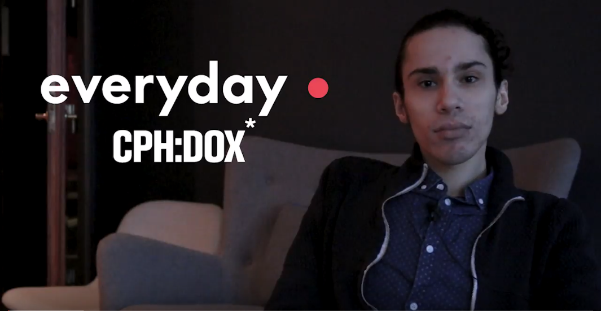

Artur Amaev
Home
CV
Portfolio
Grundlæggende HTML
Animation
Grundlæggende video
Grundlæggende UX
Home
About Me
Portfolio
Portfolio
Tidligere projekter
Her er et par eksempler på mine tidligere projekter, som jeg fik lavet på KEA.

Grundlæggende HTML
her er et eksempel på min første html hjemmeside. I denne projekt har jeg prøvet mig selv i arbejde med html og css.
Animation
Her er et lille spil jeg har lavet ved brug af javascript, html og css.

Grundlæggende Video
her er et projekt som mig og min gruppe har lavet til CPH:DOX 2018, hvor vi endte med at vinde konkurencen for den bedste film i klassen.
Grundlæggende UX
Her har vi prøvet krafterne i arbejde med UX, hvor vi fik lov til at lave om på Joe and The Juice app.